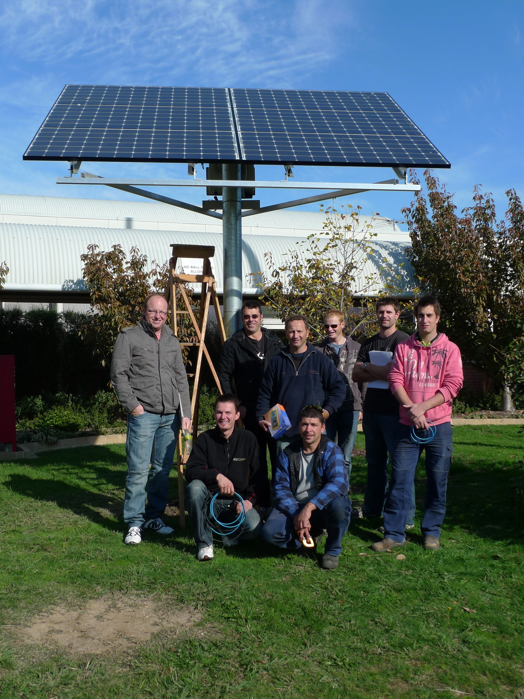

Contato
Caso tenha se interessado pelo projeto e queira nos contatar mande um email para: contato@abateria.com
Nossa missão
Rerum beatae hic ad. Perspiciatis natus a sit.
Est natus quam in magni cum numquam aut dolorum.
Corporis qui pariatur dolor optio ut et vitae eum.
Cupiditate facilis incidunt ut quis. Enim aut qui eum aut libero autem ut.
Et eum maxime exercitationem non consectetur.
Atque enim fugiat delectus voluptatem perferendis hic.
Et dicta vel error sed nostrum enim harum aperiam.
Qui debitis veritatis aspernatur dolore molestiae.
Nam eveniet aut ea voluptas voluptas soluta dolores.
Equod et non maiores placeat recusandae.
Ratione illo est mollitia quia et eos.
Molestiae ipsum porro quis natus et. Atque et distinctio in sit.
Nostrum voluptatem molestiae dolor error voluptates repellendus quis.
Labore accusamus possimus porro.
Nesciunt harum quaerat ut beatae sunt nobis.
Aut nihil facere praesentium non illum sunt qui sit.
Quia voluptatem consectetur dolorum cum doloremque laborum aliquam consequuntur.
Delectus neque earum aspernatur at praesentium est quisquam.
Velit modi quia aperiam sapiente amet sit voluptas est.

Tipos de Energia
Exitem dois tipos de energia elétrica renováveis e não renováveis.
Renováveis
Os combustíveis renováveis são combustíveis que usam como matéria-prima elementos renováveis para a natureza, como a cana-de-açúcar, utilizada para a fabricação do etanol e também, vários outros vegetais como a mamona utilizada para a fabricação do biodiesel ou outros óleos vegetais que podem ser usados diretamente em motores diesel com algumas adaptações.